作者：创世魂
● 概述
画板组件提供了一些简单的绘图功能，可以用于绘制组件或开发一些简单的小游戏。
关于游戏制作可以观看《新手入门教程》第四章第二节中的知识或观看《从易语言到火山视窗》教程中第五章第三节中的知识，可以学习如何用画板开发小游戏。
● 自绘进度条
界面设计如下：
进度条属于高频操作组件，因此为了防止画板在绘制进度条时发生闪烁，通常需要两个画板，这里起名“绘制画板”和“显示画板”。
实际操作时在被隐藏的绘制画板上绘制进度，然后将进度整体复制到显示画板中，可以防止高频绘制发生的闪烁现象。
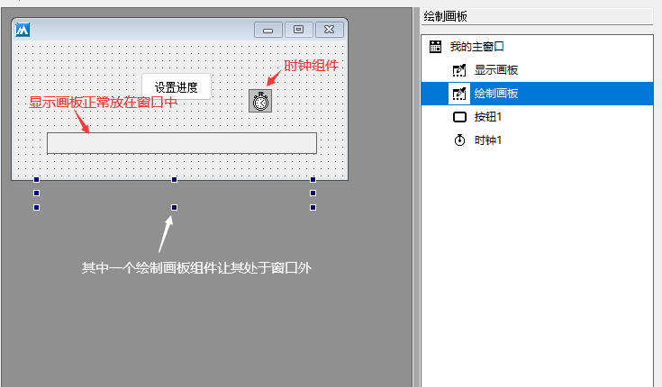
代码编写如下：
1、首先给显示画板设置一个边框线，如果不设置边框线将无法从界面上准确的得知进度结束位置。
2、给绘制画板设置相关颜色，主要用于进度背景颜色和进度文本颜色显示，因文本颜色和背景色一致，通过“画出方式”属性“或笔非”可以及时的将颜色翻转，防止文本颜色和进度颜色冲突。
3、注意设置自动重画属性，否则将绘制异常。
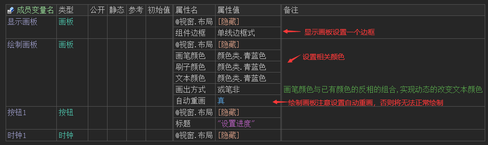
4、首先需要清除画板，否则更新进度时两次绘制重叠，进度条会显示异常。
5、在画板中间位置写出进度文本。
6、利用“画矩形()”方法绘制进度背景色。
7、最后将绘制画板的内容复制到显示画板上显示出来即可。
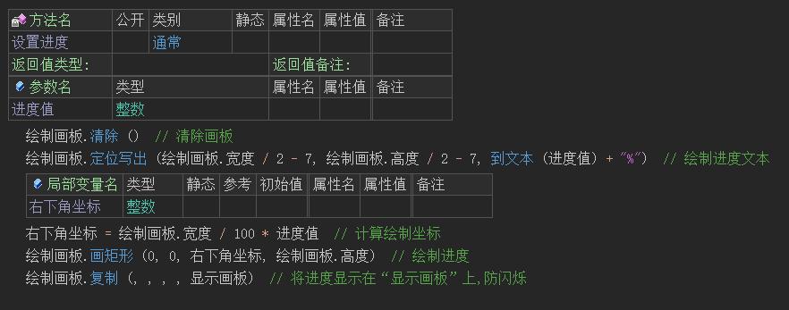
8、按钮点击后启动时钟，模拟进度加载。
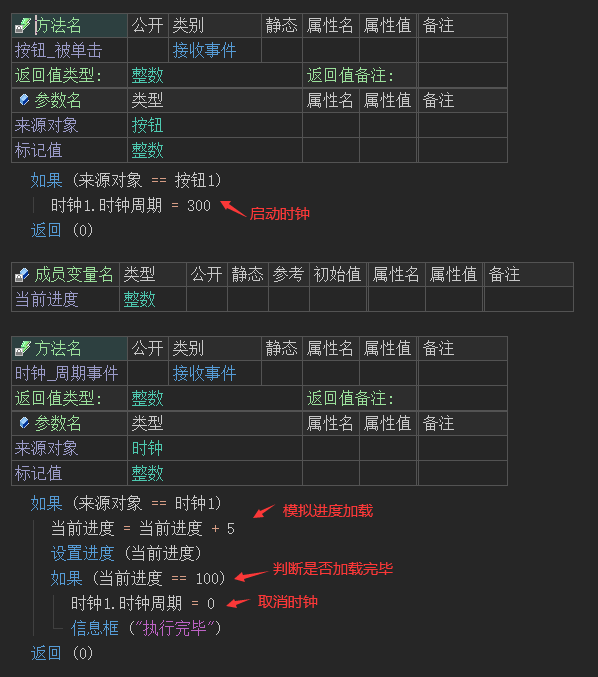
运行效果如下图：
最终实现了自绘进度条。
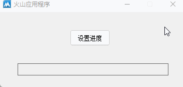
● 自绘组件封装
概述：
将自绘自绘进度条进行二次封装，以便于重复使用，可使用组件布局器实现。
操作流程如下：
1、定义组件布局器类，右键打开布局设计器。
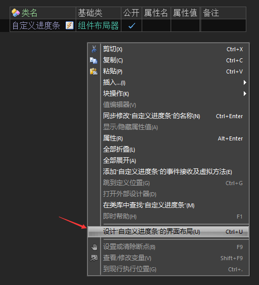
2、绘制两个画板组件，注意调整“绘制画板”为不可见状态。
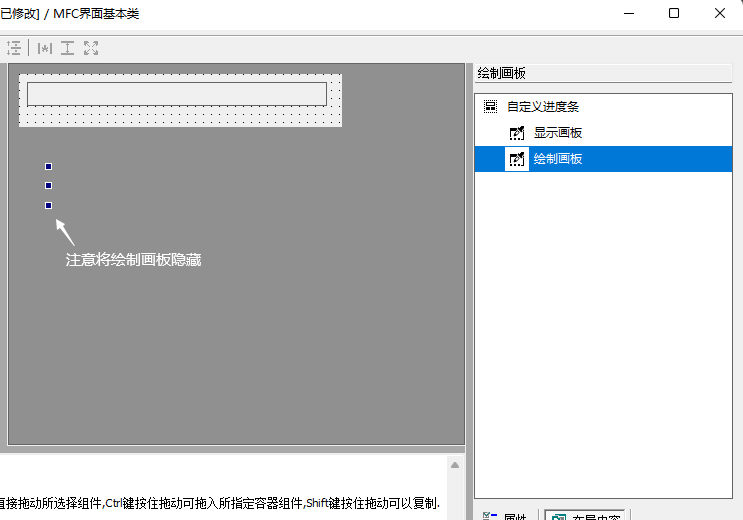
3、设置组件相关属性，同时添加“尺寸被改变”事件，让进度条支持自定义尺寸显示。
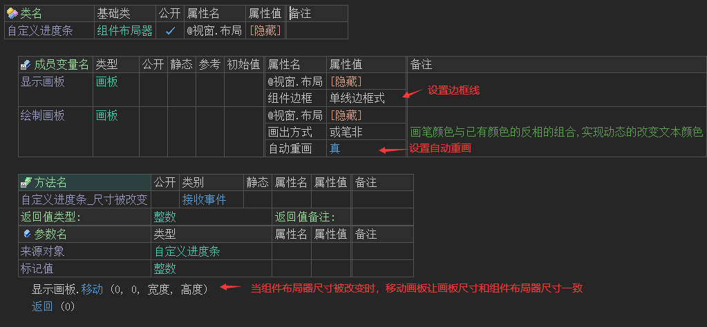
4、进度条颜色设置可单独封装一个写属性方法来实现。
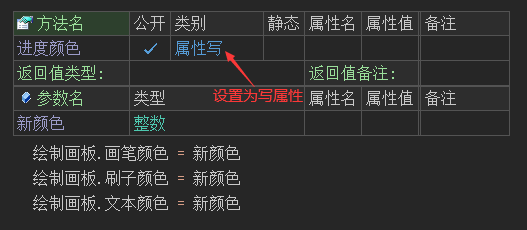
5、进度设置单独封装一个写属性方法实现。
注：因动态调整了显示画板尺寸，为了保证进度文本能够准确显示在进度条中间，需要进行精确计算其绘制位置。
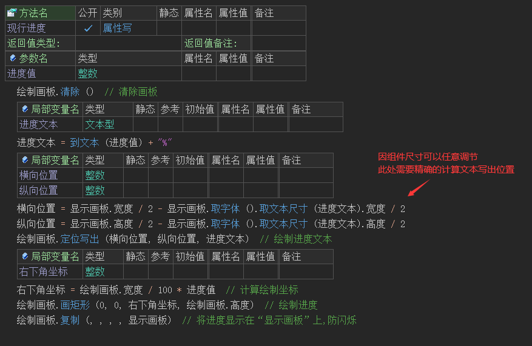
6、将自定义的进度条布局定义在窗口变量中，并设置进度颜色属性。
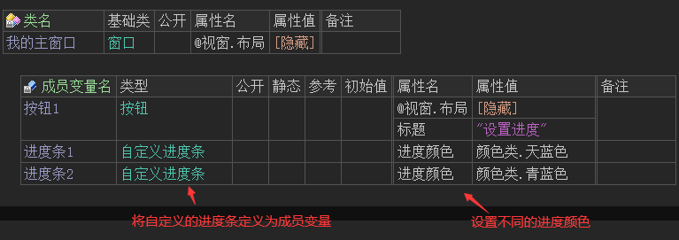
7、打开界面设计器将进度条显示出来。
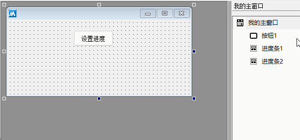
8、重复操作将两个进度条都显示在合适的位置。
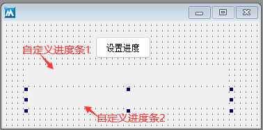
9、按钮点击后设置进度条进度位置。
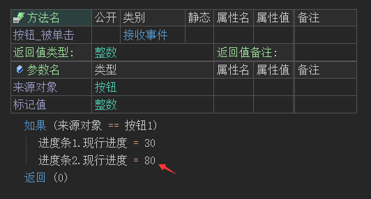
运行效果如下图：
最终被封装过的进度条可以正常被使用，如果其它窗口需要此进度条，直接将组件变量复制过去调整位置即可。
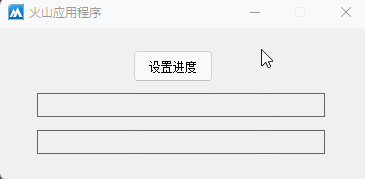